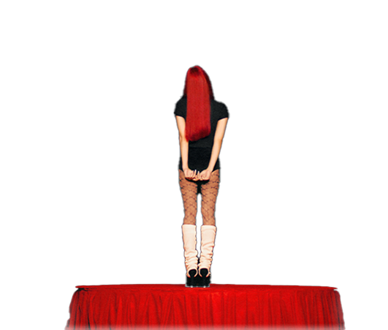
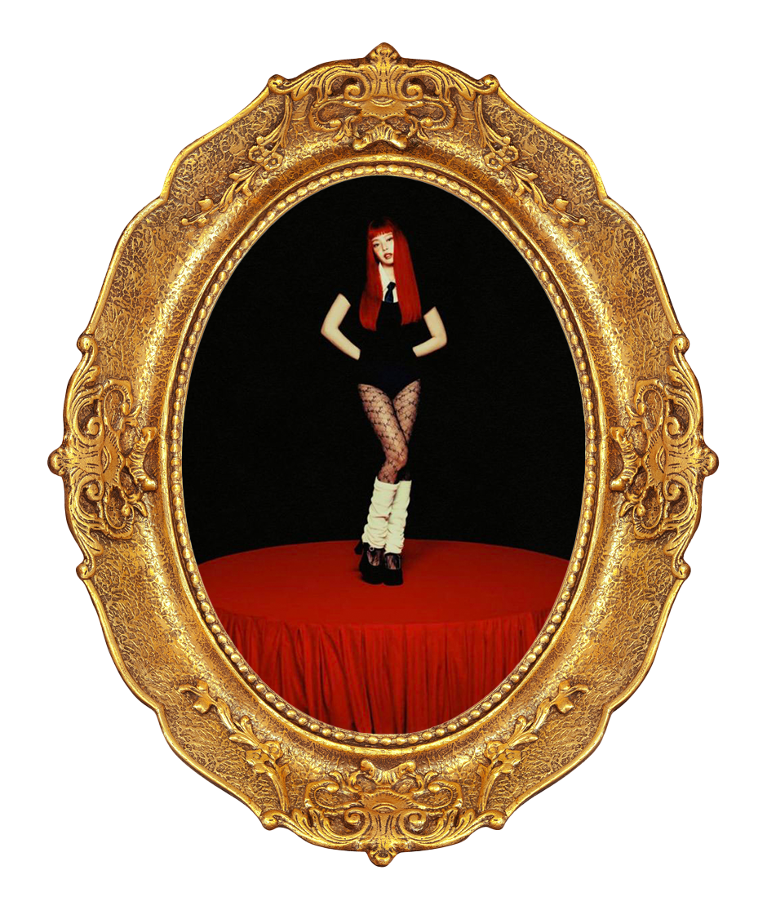

THE 1ST STUDIO ALBUM
Ruby
by
Jennie

"Jennie's first solo studio album, Ruby, showcases her diverse talents and charm, capturing Jennie's unique style. Through various songs and concepts in multiple genres, this album aims to highlight her potential as a solo artist.
The concept of the album begins with the famous line from Shakespeare's comedy As You Like It:
"All the world's a stage, And all the men and women merely players."
This line reflects the diversity of musical roles that Jennie portrays, offering a glimpse into her versatility.
The album title, Ruby, was inspired by Jennie's middle name, aiming to express her distinct color and identity. Since the concept of the album originates from theater, the red curtain, symbolizing the opening of a new act, is used as a symbolic representation throughout the album.
Ruby consists of 15 tracks in total, and features collaborations with globally renowned artists, including British pop star Dua Lipa, Donald Glover's musical alter ego Childish Gambino, rapper Doechii, Dominic Fike, French musician FKJ, and singer-songwriter Kali Uchis."
